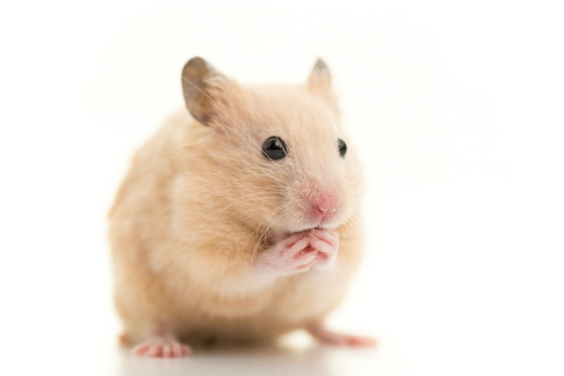

| Hamsters | |
|---|---|
| Os hamsters são pequenos roedores que têm ganhado muito espaço nas casas como pet. Trata-se de um animal muito limpo, com forte instinto de sobrevivência e hábitos noturnos (são mais ativos após às 18 horas). Os hamsters são animais brincalhões, mas solitários quando o assunto são outros da sua espécie, por outro lado, eles adoram a companhia de humanos |  |